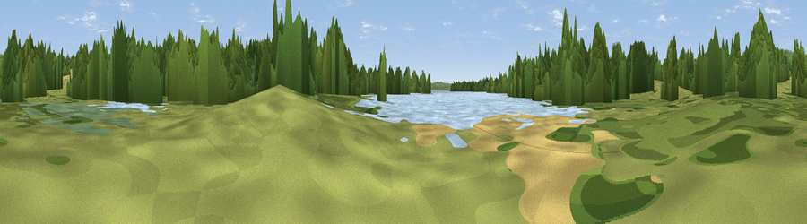

Bird Watching
#43934 in England · top 85% of its area beats it · near Ide HillThe view, rendered

A 360° render of this exact spot computed from the terrain model, tree cover and land cover — summer colours, afternoon light, calibrated against photographs of famous viewpoints. Real trees, hedges and buildings will differ in detail.
The panorama
Grey silhouette: terrain skyline in each direction (720 bearings, Earth curvature and refraction included). Dashed green: skyline with trees (+15 m) and buildings (+8 m) as obstacles. Blue strip: how far the ground is visible on each bearing.
Where the view opens
Wedge length = distance to the farthest visible ground on that bearing (vegetation-aware). Rings at 10, 25 and 50 km.
What fills the view
58% woodland · 24% grassland · 10% water · 8% cropland
Angular shares of the visible panorama (visual magnitude), not map area. Landscape diversity 0.48 (0–1 Shannon).
Key numbers
More beautiful places nearby
The staircase of upgrades: each row has a higher view potential than everything closer. Driving times are estimates from straight-line distance, calibrated against real road routing — check an actual route before setting out.
| Place | Direction | Drive | Score |
|---|---|---|---|
| Viewpoint near Ide Hill | NNW · 2 km | ~6 min | 67.9 |
| Viewpoint near Shipbourne | ENE · 8 km | ~17 min | 69.1 |
| Box Hill | W · 29 km | ~46 min | 70.4 |
| Viewpoint near Box Hill Village | W · 30 km | ~46 min | 71.0 |
| Viewpoint near Coldharbour | W · 35 km | ~54 min | 71.3 |
| Viewpoint near Plumpton | SSW · 39 km | ~58 min | 80.4 |
| Viewpoint near Westmeston | SSW · 39 km | ~58 min | 80.9 |
| Ditchling Beacon | SSW · 40 km | ~59 min | 81.8 |
51.22203, 0.14192 · source: osm viewpoint · position refined by local search. Computed location — check access rights before visiting.